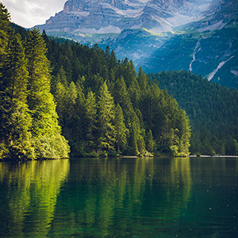

We have the only guided cycling tours in Stavanger. Integer lacus ligula, mollis nec ullamcorper vitae, vestibulum vel mi. Vivamus accumsan eget nibh et consequat.
Our core values are to stay responsible for our enviroment and to be eco friendly. The bicycles we used are made at humane factories and the tires are recycled plastic. When we see trash on the road, we pick it up.
Nam felis mi, aliquet sit amet magna vel, suscipit interdum tortor. Morbi felis lorem, tempus at luctus sed, accumsan a tellus. Integer lacus ligula, mollis nec ullamcorper vitae, vestibulum vel mi. Vivamus accumsan eget nibh et consequat.
Aliquam ipsum dolor, pellentesque in urna venenatis, mattis placerat massa. Morbi luctus urna in mollis venenatis. Integer eget sem eu metus sodales porttitor. Quisque ac nunc vel elit cursus blandit et nec justo.
We donate 10% of our earnings to the charity "Cycling for the future planet". Morbi felis lorem, tempus at luctus sed, accumsan a tellus. Aliquam ipsum dolor, pellentesque in urna venenatis, mattis placerat massa. Morbi luctus urna in mollis venenatis. Integer eget sem eu metus sodales porttitor. Quisque ac nunc vel elit cursus blandit et nec justo.
Sign up and if you want to, download our app. You can add other users as friends to make it easier to sign up for the same tours
Sign up hereBased on difficulty, length or price. You can go on a special tour alone with the guide or join a communal tour that's already set up
Choose tours hereGo to the designated meeting spot. You can choose between several bikes beforehand or just show up and we will have one ready for you
Look at our bikes